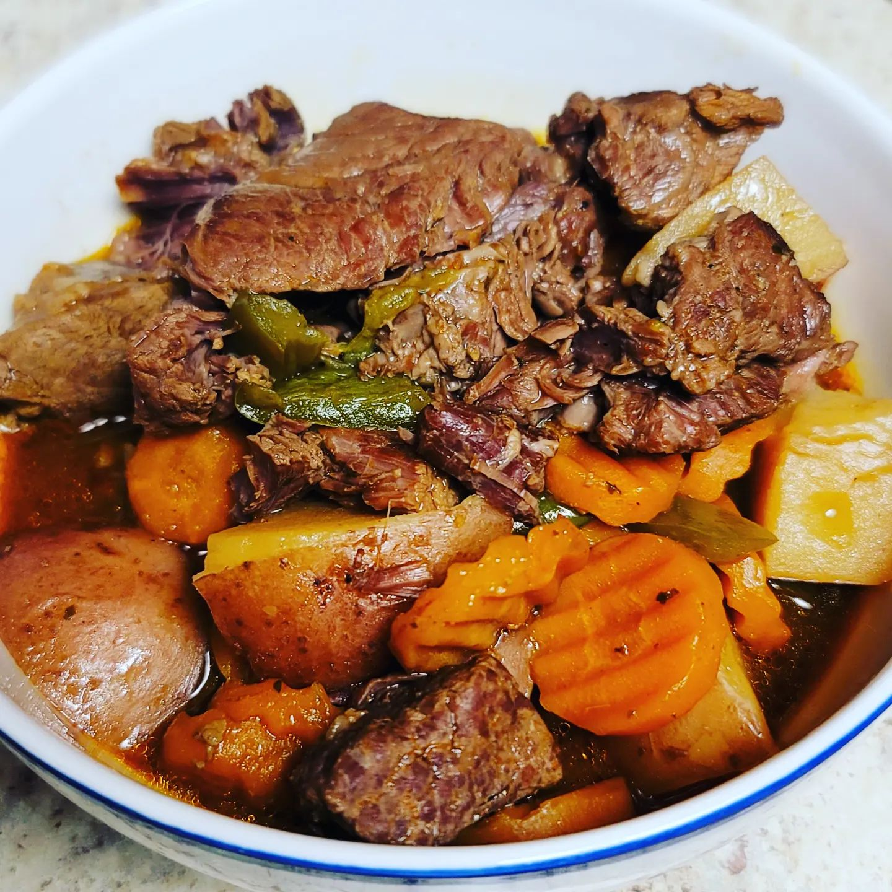

Beef Stew

Description
A simple yet delicious beef stew
A homemade dish of beef stew made with only a few ingredients.
A simple recipe for cold nights, or just as a flavorful reminder
of home.
Ingredients
- 2 lbs of stew beef meat
- 2 pounds of washed red potatoes cut into large semi-large chunks
- 1 pound of peeled carrots cut into chunks
- 1 large bell pepper cut into strips
- 2 tablespoons of seasoned salt
- 2 tablespoons of pepper
- 1 tablespoon of cayenne pepper
- 1 tablespoon of garlic powder
- 1 pack of stew beef seasoning
- 1 pack of brown gravy mix
- 2 32 oz. boxes of beef stock
Steps
- Season stew beef meat, potatoes, carrots, and bell pepper with seasoned salt, cayenne & black pepper,
and garlic.
- Place Instant Pot (or similar brand) on sear and brown stew beef meat.
- Once browned add potatoes, carrots, and bell peppers.
- Add beef stock until all ingredients are covered.
- Add brown gravy and stew beef seasoning and stir in.
- Add top, set to manual pressure, and cook on high for 30 minutes with vent closed.
- Let the pot naturally vent (without opening pressure valve) for 20 minutes.
- All done! Serve plain, or over rice.